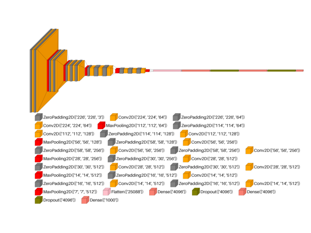
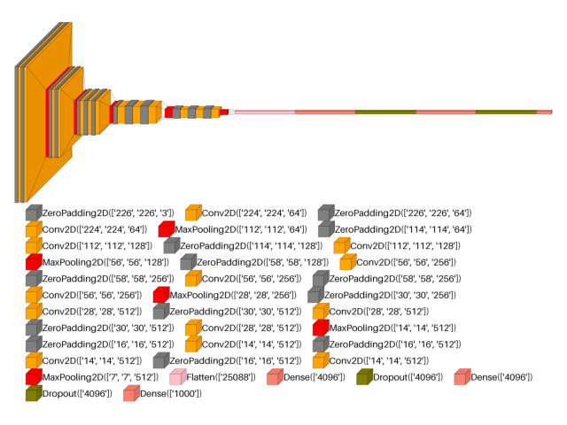
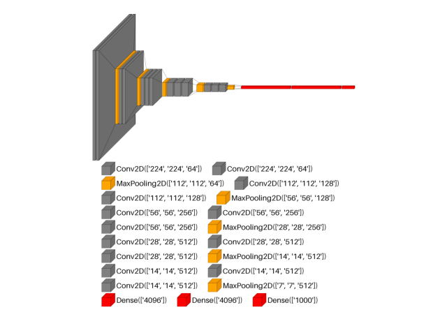
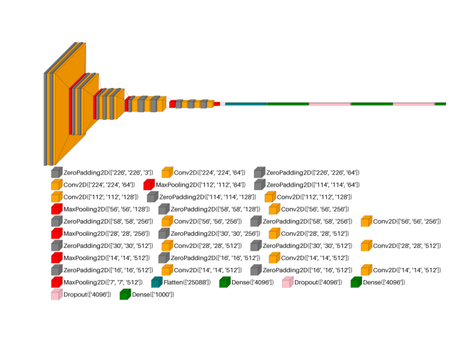
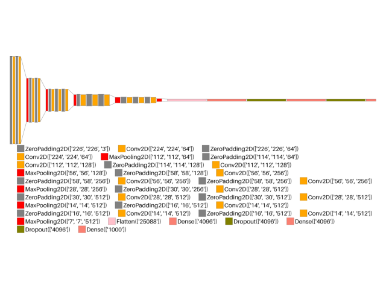
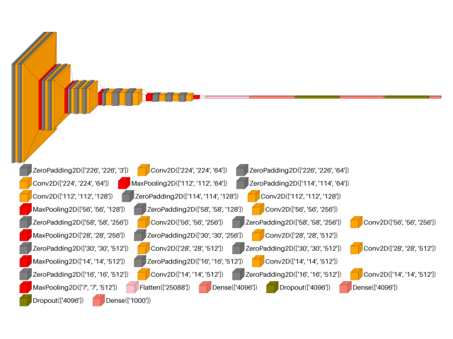

visualkeras: custom vgg16 show dimension example#
An example showing the visualkeras function
used by a tf.keras.Model model.
# Authors: The scikit-plots developers
# SPDX-License-Identifier: BSD-3-Clause
# visualkeras Need aggdraw tensorflow
# !pip install scikitplot[core, cpu]
# or
# !pip install aggdraw
# !pip install tensorflow
# pip install protobuf==5.29.4
import tensorflow as tf
# Clear any session to reset the state of TensorFlow/Keras
tf.keras.backend.clear_session()
from scikitplot import visualkeras
create VGG16
image_size = 224
model = tf.keras.models.Sequential()
model.add(tf.keras.layers.InputLayer(shape=(image_size, image_size, 3)))
model.add(tf.keras.layers.ZeroPadding2D((1, 1)))
model.add(tf.keras.layers.Conv2D(64, activation="relu", kernel_size=(3, 3)))
model.add(tf.keras.layers.ZeroPadding2D((1, 1)))
model.add(tf.keras.layers.Conv2D(64, activation="relu", kernel_size=(3, 3)))
model.add(visualkeras.SpacingDummyLayer())
model.add(tf.keras.layers.MaxPooling2D((2, 2), strides=(2, 2)))
model.add(tf.keras.layers.ZeroPadding2D((1, 1)))
model.add(tf.keras.layers.Conv2D(128, activation="relu", kernel_size=(3, 3)))
model.add(tf.keras.layers.ZeroPadding2D((1, 1)))
model.add(tf.keras.layers.Conv2D(128, activation="relu", kernel_size=(3, 3)))
model.add(visualkeras.SpacingDummyLayer())
model.add(tf.keras.layers.MaxPooling2D((2, 2), strides=(2, 2)))
model.add(tf.keras.layers.ZeroPadding2D((1, 1)))
model.add(tf.keras.layers.Conv2D(256, activation="relu", kernel_size=(3, 3)))
model.add(tf.keras.layers.ZeroPadding2D((1, 1)))
model.add(tf.keras.layers.Conv2D(256, activation="relu", kernel_size=(3, 3)))
model.add(tf.keras.layers.ZeroPadding2D((1, 1)))
model.add(tf.keras.layers.Conv2D(256, activation="relu", kernel_size=(3, 3)))
model.add(visualkeras.SpacingDummyLayer())
model.add(tf.keras.layers.MaxPooling2D((2, 2), strides=(2, 2)))
model.add(tf.keras.layers.ZeroPadding2D((1, 1)))
model.add(tf.keras.layers.Conv2D(512, activation="relu", kernel_size=(3, 3)))
model.add(tf.keras.layers.ZeroPadding2D((1, 1)))
model.add(tf.keras.layers.Conv2D(512, activation="relu", kernel_size=(3, 3)))
model.add(tf.keras.layers.ZeroPadding2D((1, 1)))
model.add(tf.keras.layers.Conv2D(512, activation="relu", kernel_size=(3, 3)))
model.add(visualkeras.SpacingDummyLayer())
model.add(tf.keras.layers.MaxPooling2D((2, 2), strides=(2, 2)))
model.add(tf.keras.layers.ZeroPadding2D((1, 1)))
model.add(tf.keras.layers.Conv2D(512, activation="relu", kernel_size=(3, 3)))
model.add(tf.keras.layers.ZeroPadding2D((1, 1)))
model.add(tf.keras.layers.Conv2D(512, activation="relu", kernel_size=(3, 3)))
model.add(tf.keras.layers.ZeroPadding2D((1, 1)))
model.add(tf.keras.layers.Conv2D(512, activation="relu", kernel_size=(3, 3)))
model.add(tf.keras.layers.MaxPooling2D())
model.add(visualkeras.SpacingDummyLayer())
model.add(tf.keras.layers.Flatten())
model.add(tf.keras.layers.Dense(4096, activation="relu"))
model.add(tf.keras.layers.Dropout(0.5))
model.add(tf.keras.layers.Dense(4096, activation="relu"))
model.add(tf.keras.layers.Dropout(0.5))
model.add(tf.keras.layers.Dense(1000, activation="softmax"))
# model.summary()
Now visualize the model!
from collections import defaultdict
color_map = defaultdict(dict)
color_map[tf.keras.layers.Conv2D]["fill"] = "orange"
color_map[tf.keras.layers.ZeroPadding2D]["fill"] = "gray"
color_map[tf.keras.layers.Dropout]["fill"] = "pink"
color_map[tf.keras.layers.MaxPooling2D]["fill"] = "red"
color_map[tf.keras.layers.Dense]["fill"] = "green"
color_map[tf.keras.layers.Flatten]["fill"] = "teal"
from PIL import ImageFont
ImageFont.load_default()
<PIL.ImageFont.FreeTypeFont object at 0x7ff414335210>
img_vgg16_show_dimension = visualkeras.layered_view(
model,
legend=True,
show_dimension=True,
type_ignore=[visualkeras.SpacingDummyLayer],
font={
"font_size": 61,
# 'use_default_font': False,
# 'font_path': '/usr/share/fonts/truetype/dejavu/DejaVuSans-Bold.ttf'
},
# to_file="result_images/vgg16_show_dimension.png",
save_fig=True,
save_fig_filename="vgg16_show_dimension.png",
)
img_vgg16_show_dimension

<matplotlib.image.AxesImage object at 0x7ff47410c850>
img_vgg16_legend_show_dimension = visualkeras.layered_view(
model,
legend=True,
show_dimension=True,
type_ignore=[visualkeras.SpacingDummyLayer],
font={
"font_size": 61,
# 'use_default_font': False,
# 'font_path': '/usr/share/fonts/truetype/dejavu/DejaVuSans-Bold.ttf'
},
# to_file="result_images/vgg16_legend_show_dimension.png",
save_fig=True,
save_fig_filename="vgg16_legend_show_dimension.png",
)
img_vgg16_legend_show_dimension

<matplotlib.image.AxesImage object at 0x7ff414232c90>
img_vgg16_spacing_layers_show_dimension = visualkeras.layered_view(
model,
legend=True,
show_dimension=True,
type_ignore=[],
spacing=0,
font={
"font_size": 61,
# 'use_default_font': False,
# 'font_path': '/usr/share/fonts/truetype/dejavu/DejaVuSans-Bold.ttf'
},
# to_file="result_images/vgg16_spacing_layers_show_dimension.png",
save_fig=True,
save_fig_filename="vgg16_spacing_layers_show_dimension.png",
)
img_vgg16_spacing_layers_show_dimension

<matplotlib.image.AxesImage object at 0x7ff4142b42d0>
img_vgg16_type_ignore_show_dimension = visualkeras.layered_view(
model,
legend=True,
show_dimension=True,
type_ignore=[
tf.keras.layers.ZeroPadding2D,
tf.keras.layers.Dropout,
tf.keras.layers.Flatten,
visualkeras.SpacingDummyLayer,
],
font={
"font_size": 61,
# 'use_default_font': False,
# 'font_path': '/usr/share/fonts/truetype/dejavu/DejaVuSans-Bold.ttf'
},
# to_file="result_images/vgg16_type_ignore_show_dimension.png",
save_fig=True,
save_fig_filename="vgg16_type_ignore_show_dimension.png",
)
img_vgg16_type_ignore_show_dimension

<matplotlib.image.AxesImage object at 0x7ff41411c850>
img_vgg16_color_map_show_dimension = visualkeras.layered_view(
model,
legend=True,
show_dimension=True,
type_ignore=[visualkeras.SpacingDummyLayer],
color_map=color_map,
font={
"font_size": 61,
# 'use_default_font': False,
# 'font_path': '/usr/share/fonts/truetype/dejavu/DejaVuSans-Bold.ttf'
},
# to_file="result_images/vgg16_color_map_show_dimension.png",
save_fig=True,
save_fig_filename="vgg16_color_map_show_dimension.png",
)
img_vgg16_color_map_show_dimension

<matplotlib.image.AxesImage object at 0x7ff414183390>
img_vgg16_flat_show_dimension = visualkeras.layered_view(
model,
legend=True,
show_dimension=True,
type_ignore=[visualkeras.SpacingDummyLayer],
draw_volume=False,
font={
"font_size": 61,
# 'use_default_font': False,
# 'font_path': '/usr/share/fonts/truetype/dejavu/DejaVuSans-Bold.ttf'
},
# to_file="result_images/vgg16_flat_show_dimension.png",
save_fig=True,
save_fig_filename="vgg16_flat_show_dimension.png",
)
img_vgg16_flat_show_dimension

<matplotlib.image.AxesImage object at 0x7ff4141ed210>
img_vgg16_scaling_show_dimension = visualkeras.layered_view(
model,
legend=True,
show_dimension=True,
type_ignore=[visualkeras.SpacingDummyLayer],
# min_z = 1,
# min_xy = 1,
# max_z = 4096,
# max_xy = 4096,
# scale_z = 0.25,
# scale_xy = 5,
font={"font_size": 61},
# to_file="result_images/vgg16_scaling_show_dimension.png",
save_fig=True,
save_fig_filename="vgg16_scaling_show_dimension.png",
)
img_vgg16_scaling_show_dimension

<matplotlib.image.AxesImage object at 0x7ff41405b4d0>
Total running time of the script: (0 minutes 14.821 seconds)
Related examples